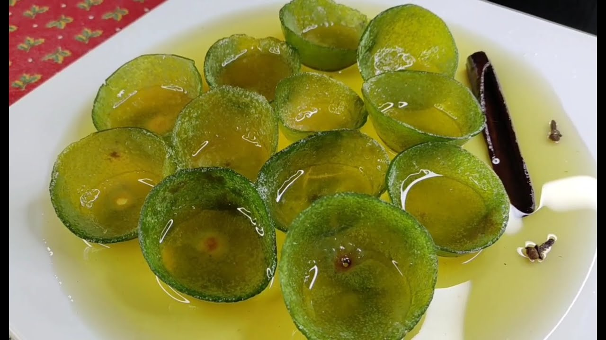
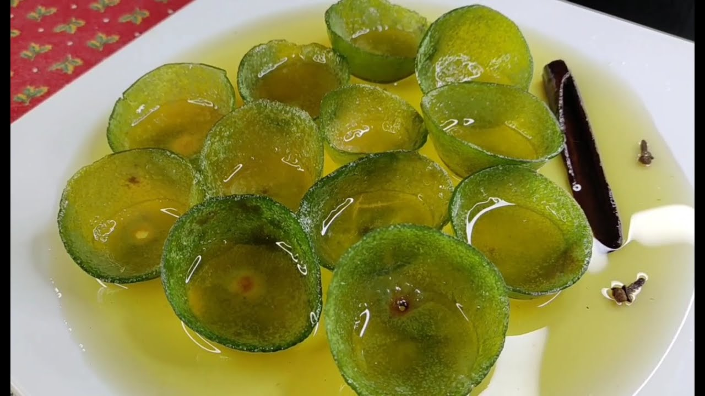

Bienvenidos
Historia, arquitectura y tradición en el corazón de Mompox. Patrimonio de la Humanidad, con calles empedradas, iglesias coloniales, gastronomía única y cultura viva.
Iglesias de Mompox
Las iglesias de Mompox son testigos silenciosos del pasado colonial y la fe de su pueblo. Cada una posee una arquitectura única y detalles artísticos que reflejan siglos de historia.
Gastronomía de Mompox
La gastronomía momposina es una fusión de tradición, sabor y herencia cultural. En cada plato se saborea la historia del Magdalena Medio. Para reservas y pedidos puedes comunicarte al número +57 310 456 7890.
 

Lugares Emblemáticos
Calles coloniales, plazas y el majestuoso río Magdalena conforman el paisaje histórico que define a Mompox como una joya del Caribe colombiano.
Cultura y Tradiciones
La cultura momposina se expresa en su música, procesiones, festivales y oficios artesanales. Cada evento mantiene viva la identidad y el orgullo de su gente.
Cementerio de Mompox
El Cementerio de Mompox es una joya arquitectónica que combina arte, historia y memoria. Sus esculturas y mausoleos cuentan las historias de familias ilustres y personajes anónimos.